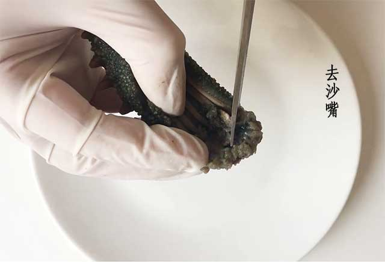
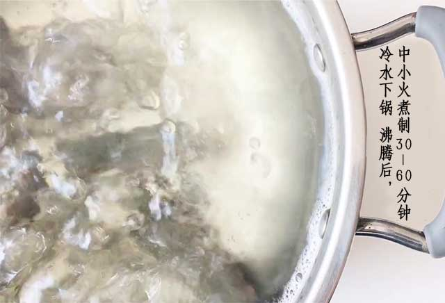
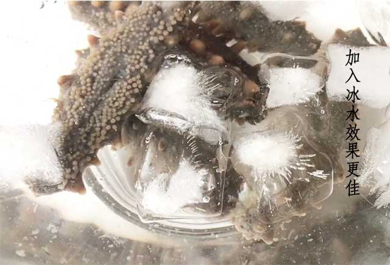
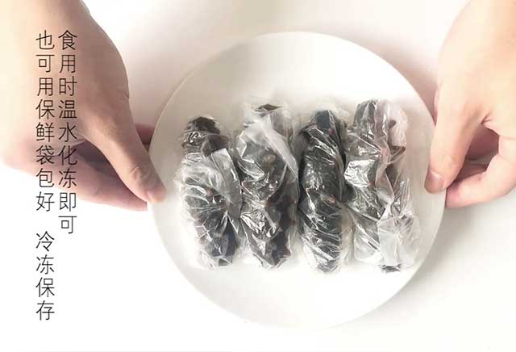
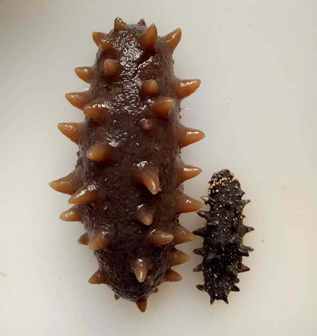

海参泡发方法攻略
大家好，我叫阿渡，来自渡小贩海参官网的资深海参顾问，很多顾客泡发不好海参，我家好几辈人跟海参打交道，海参泡发很有心得，经大家一致要求，我来给大家讲解一下，希望能帮到大家。
海参泡发很简单，牢记“泡—煮—泡”
第一步：泡海参
未浸泡的干海参比较硬，需要把海参泡软，首先把干海参洗净放入无油的容器中（油会使海参自溶缩小），然后放入纯净水（勿用自来水），水能完全浸泡海参（在水中添加冰块效果更好），然后放入冰箱中，每天早晚各换一次水（每隔12小时换一次水），一般需要浸泡72小时。
温馨提示：①选用纯净水。海参怕脏，自来水中杂质多，会导致海参表面皮肤出现一层碎粉，导致海参泡不大，表面发粘，不仅影响美观还损失了营养，如果没有纯净水，其他用水是烧开晾凉后再用。这样才能使海参泡的个大，保证营养不流失，肉质有弹性。
②海参体内含有自溶酶，遇到油时海参在酶的促进下会开始自溶，最终融化成液体呈水状。
第二步：去沙嘴

海参从冰箱取出，海参腹部有一个小开口，用剪刀沿着腹部剪开，海参的一端长有海参牙，摸起来硬硬的白色小颗粒，把海参口器和牙板去除。海参腔内有几条白色条纹，那是海参筋，由于是野生海参，海参筋下面会藏有少许沙子，所以清洗时要细心些。用剪刀把海参筋全部割断成几段，这样海参才能发的更大。
温馨提示：海参筋的营养很高，可以食用。
第三步：上锅煮（成败关键步骤）

这个步骤最关键，煮的时候也要用纯净水，要凉水下锅，水开后中小火煮30-60分钟左右。也可用带煮粥功能的电饭锅汤煲，打到煮粥档，煲一个小时。煮完后的海参不要着急打开锅盖，经过水沸腾后锅里是无菌环境，海参可以在自然的环境中得到更好的发制，盖好锅盖焖到自然凉透为止。
温馨提示：①锅一定要洗干净，不能有残留油渍，水量可以多些，防止烧干。煮后的水变成绿色是正常现象。
②锅中海参冷却后用手掐掐参体很有弹性，没有硬芯就是煮制成功了，反之则需要继续煮制，大概需要20分钟。
第四步：泡发海参

一次泡发。煮制后的海参，放入盛满纯净水的容器再浸泡2天，早晚换水（每个12小时换一次水）放入冰箱冷藏室中，水中添加冰块效果会更好。
温馨提示：浸泡海参的水温维持在0-5℃，一旦过高就会引起掉皮掉渣的现象，严重的甚能导致自溶。期间可以多观察海参泡发程度，发好的捞出便可食用，没发好的继续浸泡。
第五步：存储

海参泡发好就可捞出食用。
把多余的海参捞出，沥干水后的海参建议放入冷冻室存储，冷藏室。
温馨提示：泡发海参过程繁琐，建议每次多泡发一些，然后单个带水冷冻，吃的时候化开即可，不影响口感。冷藏的海参须在1周内食用，一般冷冻的海参可以保质2个月，但建议在2周内食用，保证营养不流失。
生活小妙招：①将冷冻发好的海参取出，用装水的小喷壶喷点水，这样参身上就有了层天然的冰膜，可以起到很好的保鲜作用。
泡发海参你学会了吗？
常见的海参泡不大原因
1、有硬心：
泡发时，海参有硬心，是没有泡透或者煮透。
2、隔油：
海参操作过程中没有完全隔油，会使海参体内的自溶酶被激活，轻则海参脱皮掉渣，营养流失，严重了还会导致海参自溶化成一滩水。
3、水质：
需使用纯净水，自来水中的杂质会破坏海参细胞壁，最终影响海参泡发的个头以及营养。泡发过程中需要每隔12小时换水一次，海参需要不断吸收水分，有了干净的水质才能让海参泡发到理想的个头，不仅口感好，营养物质也不会流失。
4、水温：
泡海参的水不够凉，建议水温在0-5℃，水温高会导致海参蜕皮掉渣，营养流失，严重会导致海参融化。即使在冬天也要控制泡发时的温度，随着天气渐渐转凉，室温也不断降低，因此有的人可能觉得室温下泡海参没问题——这种做法要不得，一定要放到冰箱里。
5、选择优质淡干海参：
真正的好海参是不怕煮的，好海参经过加工后细胞壁都是完整的，营养不会流失，所以好的海参是煮不碎煮不坏的，好海参泡发好后很有弹性，有嚼劲。在淘宝上就有很多低价“野生海参”，1000、2000的价格就能买到，有的更甚是几百块就能买到。而野生鲜活海参在海边的收购价是100元一斤，每30-35斤鲜海参才能晒出1斤干海参，也就说一斤干海参的成本价少是3000元，所以那些低价参的质量谁能保证。
泡发率：

对于海参的泡发率，一定要正确的看待，一味的追求泡发率是不对的，海参的泡发率在10到15倍都是正常的。不要刻意的去追求泡发率，水质、水温，煮制时都会对泡发造成一定影响。我想告诉大家的是其实海参泡发的大小对海参内在营养的影响不大，也许有人会说海参泡发出来越大越好大，其实不是这样的，大不大只是海参表面的形式，内在价值才是我们参友应该追求的，我是这样觉得的，你们觉得呢？
如果你泡发中还有其他问题，或是不会鉴别海参品质，都可以添加阿渡微信号资询探讨，阿渡微信号：DXF865 联系电话：16577588881
郑重提示：
66666
郑重提示：
66666
郑重提示：
66666
郑重提示：
66666
郑重提示：
66666